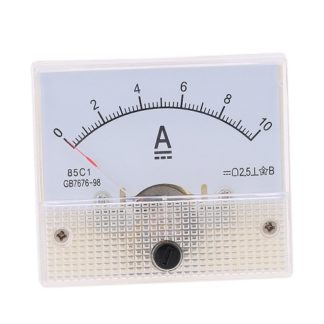

Alat Ukur Elektronika dan Fungsinya | Alat ukur elektronik (listrik) merupakan perkakas/alat yang digunakan untuk mengukur besaran-besaran listrik seperti hambatan listrik (R), kuat arus listrik (I), beda potensial listrik (V), daya listrik (P), dan lainnya. Terdapat dua jenis alat ukur yaitu alat ukur analog dan alat ukur digital.
1 Ampermeter Amperemeter adalah alat yang digunakan untuk mengukur kuat arus listrik baik untuk listrik DC maupun AC yang ada dalam rangkaian tertutup. Amperemeter biasanya dipasang berderet dengan elemen listrik. Cara menggunakannya adalah dengan menyisipkan amperemeter secara langsung ke rangkaian.
2. Volt Meter Jenis yang pertama adalah volt meter. Volt meter sendiri merupakan alat ukur tegangan yang masuk di dalam satu rangkaian. Umumnya, volt meter ini sering dipergunakan oleh teknisi elektronika agar mengetahui besarnya tegangan listrik yang masuk di dalam rangkaian. Ada berbagai macam bagian dari volt meter ini seperti terminal positif serta negatif. Terminal positif serta negative ini dipergunakan sebagai penghubung volt meter ke arah sumber listrik. kemudian ada juga batas ukur, batas ukur terlihat dari batas maksimal jarum.
3. Ohm Meter Berfungsi sebagai pengukur daya listrik dan resistansi rangkaian listrik, ohm meter juga dapat digunakan untuk mengetes apakah bagian saklar, sekring serta kabel terputus atau tidak. Untuk menggunakan ohm meter, langkah yang dilakukan cukup mudah. Anda hanya perlu memutuskan daya yang berasal dari rangkaian, kemudian masukkan probe di lubang meteran, lakukan pengaturan meteran agar posisinya ada di angka 0.
4. Oscilloscope Pernah mendengar atau bahkan menggunakan oscilloscope? Oscilloscope merupakan alat yang digunakan untuk mengukur dan memproyeksikan bentuk sinyal listrik sehingga dapat dilihat ke dalam bentuk sinyal digital. Oscilloscope mempunyai sejumlah manfaat seperti mengukur amplitude dari radio, kemudian mengetahui beda input serta output hingga menyelidiki gejala periodik.
5. Tespen Untuk mengetahui serta mengecek apakah penghantar mempunyai tegangan atau tidak, tespen umumnya akan digunakan. Di sini, penghantar listrik yang dimaksud seperti kawat listrik, kabel listrik hingga stop kontak listrik. Perlu diketahui, tespen hanya bisa digunakan untuk mengetahui ada atau tidaknya aliran listrik di penghantar listrik dengan menggunakan indikator lampu. Contohnya, saat terdapat listrik di kabel, lampu indikator akan langsung menyala. Tetapi, bila tidak terdapat aliran listrik, lampu tidak menyala.